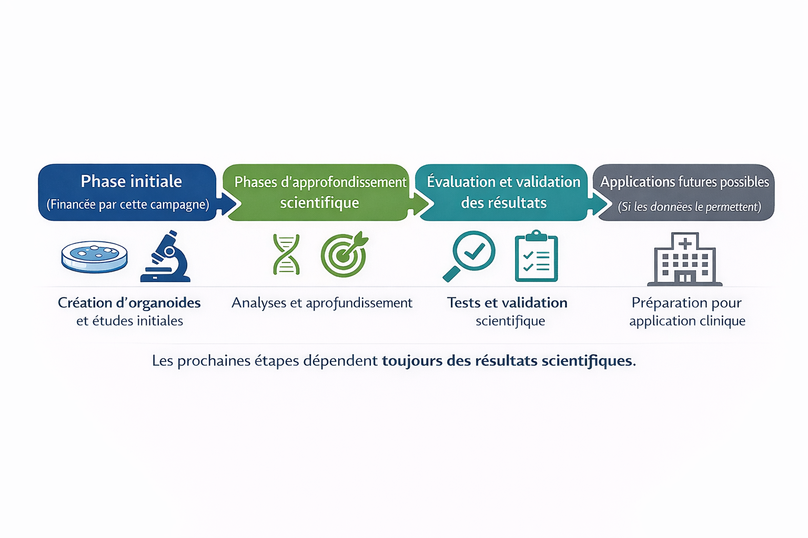

Une campagne réelle. Une course contre le temps.
Ensemble pour Giulia
Et pour tous les enfants atteints du syndrome de Pallister-Killian.
Project PKS — Recherche sur le syndrome de Pallister-Killian
Notre fille est atteinte du syndrome de Pallister-Killian (PKS), une maladie génétique rare. Aujourd’hui, il n’existe aucun traitement curatif — mais il existe une opportunité concrète : lancer une recherche scientifique basée sur des modèles cellulaires du cerveau humain, développés à partir de cellules de patients, afin de mieux comprendre la maladie et d’explorer des stratégies thérapeutiques de manière rigoureuse et sécurisée.
Pour que cette opportunité scientifique puisse devenir une recherche concrète, il est nécessaire de réunir le financement de la phase initiale.
🎯 Objectif de la campagne : 500 000 USD
➡️ Financement de la phase initiale du programme de recherche (trois enfants inclus dans cette première étape)
Le protocole scientifique est défini.
Le laboratoire partenaire est prêt.
La recherche peut commencer.

Le combat de Giulia contre le PKS
Cette vidéo explique notre combat et l’urgence de lancer une recherche scientifique dédiée au PKS.
Pourquoi ce projet existe
On pourrait croire que les maladies rares concernent peu de personnes. En réalité, elles touchent des millions de patients dans le monde.
Plus de 6 000 maladies rares existent aujourd’hui, représentant plus de 300 millions de personnes à l’échelle mondiale. Dans de nombreux cas, elles ont un impact majeur sur la qualité de vie, avec des troubles moteurs, sensoriels ou intellectuels.
Ces dernières années, la recherche biomédicale a permis des avancées importantes. Mais pour beaucoup de maladies rares, les connaissances restent limitées et les options thérapeutiques demeurent insuffisantes.
Faire progresser la recherche demande du temps, de la méthode et des projets ciblés, capables de transformer des situations individuelles en avancées collectives.
C’est dans cet esprit que s’inscrit ce projet.
Pour Giulia — et pour des millions d’autres enfants — le temps compte. Chaque mois sans recherche est un mois sans réponse.
Photos de Giulia
Quelques images pour faire connaissance avec Giulia.


Diagnostic : Pallister-Killian (PKS)
Mieux comprendre le PKS est une étape essentielle pour faire progresser la recherche, ouvrir de nouvelles perspectives et bénéficier à l’ensemble des enfants concernés par cette maladie.
🧬 Diagnostic — Syndrome de Pallister-Killian (PKS)
Le syndrome de Pallister-Killian (PKS) est une maladie génétique rare causée par une anomalie chromosomique mosaïque (tetrasomie 12p).
Il apparaît sous forme de mosaïque, ce qui signifie que seules certaines cellules présentent l’anomalie. Cela rend le diagnostic plus difficile et explique pourquoi chaque enfant peut être touché différemment.
Giulia présente une atteinte globale du développement, incluant des retards moteurs, une hypotonie, une absence de langage et des difficultés d’interaction sociale.
Chez d’autres enfants, le syndrome peut s’accompagner de manifestations plus complexes, telles que des malformations congénitales, des troubles neurologiques sévères. À l’inverse, certaines formes peuvent être plus modérées, illustrant la grande variabilité du syndrome de Pallister-Killian.
🧠 Pourquoi cette recherche est nécessaire
Bien que le syndrome de Pallister-Killian ait déjà fait l’objet de recherches scientifiques, celles-ci restent majoritairement descriptives et rarement orientées vers l’évaluation de stratégies thérapeutiques.
À ce jour, la prise en charge repose essentiellement sur des soins de soutien, sans action ciblée sur les mécanismes biologiques de la maladie.
Cette recherche vise à combler un vide scientifique, en développant un modèle fonctionnel de la maladie permettant d’en étudier les mécanismes et d’explorer, de manière rigoureuse, des pistes thérapeutiques potentielles.
Recherche avec des organoïdes cérébraux
Les organoïdes sont des modèles du cerveau humain développés à partir de cellules de patients, qui reflètent de manière fidèle des caractéristiques cellulaires du cerveau de l’enfant, permettant d’étudier les mécanismes de la maladie et d’évaluer des stratégies scientifiques de façon rigoureuse et sécurisée.
🔬 Le programme de recherche
Le développement d’une approche scientifique pour une maladie génétique rare est un processus progressif, structuré en étapes successives et orienté par les résultats scientifiques obtenus à chaque phase.
Le programme débute par la création d’organoïdes cérébraux, des modèles du cerveau humain développés à partir de cellules de trois enfants atteints de PKS, dont Giulia. Ces modèles reproduisent l’anomalie génétique de la maladie et permettent d’étudier, en laboratoire, le fonctionnement cellulaire du cerveau affecté.
À partir de ces organoïdes, les chercheurs analysent les mécanismes biologiques et neurologiques du PKS, afin de comprendre comment les cellules se développent, communiquent et où apparaissent les altérations liées à la maladie.
Des marqueurs mesurables sont ensuite identifiés (activité cellulaire, expression de gènes, organisation des neurones), permettant de comparer les effets observés de manière scientifique.
Le programme comprend enfin l’évaluation de stratégies scientifiques directement sur ces organoïdes, notamment la modulation de processus biologiques altérés et l’évaluation de substances et d’approches déjà décrites par la science, afin d’en analyser les effets biologiques et fonctionnels.
💰 Budget et vision à long terme
Le budget de 500 000 USD correspond à la phase initiale du programme de recherche.
Il permet de démarrer les travaux expérimentaux, de produire les premiers résultats scientifiques et de déterminer les suites possibles du programme.
À ce jour, le coût global estimé pour mener ce programme jusqu’à une éventuelle application clinique est évalué entre 5 et 6 millions de dollars, structurés en étapes successives, en fonction des résultats scientifiques obtenus.
La poursuite du programme dépendra exclusivement des résultats scientifiques obtenus lors de la phase initiale.

Dons
Chaque don contribue directement à accélérer la recherche.
Si vous ne pouvez pas donner aujourd'hui, partager fait déjà une grande différence.
🔒 Carte · Apple Pay · Google Pay · SEPA
Vous ne pouvez pas faire un don aujourd'hui ?
Partager est déjà une manière d’aider. Envoyez ce projet à 5 personnes — c'est ainsi qu'une campagne prend de la force.
Votre soutien ne se limite pas au don : partager et suivre le projet fait déjà une vraie différence.
Association
Project PKS est une association à but non lucratif enregistrée en France, régie par la loi 1901.
Elle a pour mission de financer, structurer et accélérer des programmes de recherche scientifique consacrés au syndrome de Pallister-Killian (PKS), afin d’explorer des stratégies thérapeutiques potentielles.
L’association concentre exclusivement son action sur le financement et l’organisation de projets scientifiques dédiés au PKS.
Elle n’a pas vocation à proposer un accompagnement médical ou social, ni un service de mise en relation. En revanche, nous répondons volontiers aux familles concernées qui souhaitent contribuer au projet ou partager des informations utiles à la recherche.
Pour les familles concernées par le PKS
Ce projet vise à faire avancer la recherche sur le syndrome de Pallister-Killian et à ouvrir des perspectives pour l’ensemble des enfants concernés. Il est né d’une histoire personnelle — celle de Giulia — mais s’inscrit dans une démarche collective et scientifique. Si vous êtes une famille concernée et souhaitez participer ou contribuer, nous serions heureux d’entrer en contact avec vous.
Vous pouvez nous écrire directement :